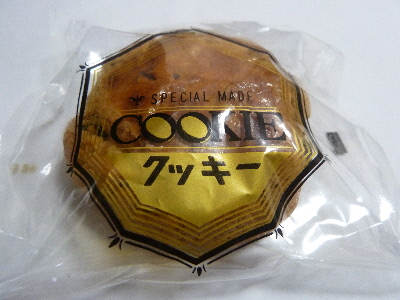
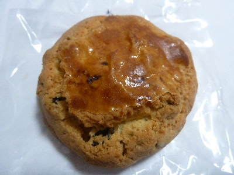
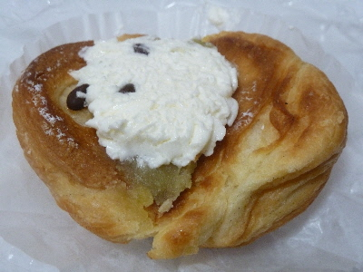

神戸ベーカリーのレーズンたっぷりクッキー
2018/05/09
パッケージはクッキーとだけ書いてある。

ちょっとレトロ感のあるパッケージです。

大きなクッキーにはレーズンがいっぱい入っていました。
私はレーズンが好きなので美味しくいただきました。
次はいつ行けるかわかりませんが、また買いたいです。
鳥取県境港市松ケ枝町31
2018/05/09
パッケージはクッキーとだけ書いてある。

ちょっとレトロ感のあるパッケージです。

大きなクッキーにはレーズンがいっぱい入っていました。
私はレーズンが好きなので美味しくいただきました。
次はいつ行けるかわかりませんが、また買いたいです。
2018/05/03
水木しげるロードを歩いて疲れたので、甘いパンを買いました。

クリームも甘いし、栗か芋か分らなかったけどあんこも甘くて疲れがとれました。
いい買い物ができました。
2010/08/04
境港市の水木しげるロードで、パンを買いました。
ぬりかべです。他にも妖怪の格好をしたパンが何種類かあったんですが、これが一番シンプルで可愛かったです。
パンの間にクリームが入っていて、ケーキの土台部分を食べてる感じがしました。
ちょっと懐かしい感じの味の菓子パンですね。
私はゲゲゲの鬼太郎を子供の頃に見てたので、懐かしい感じが強くしていい商品だなと思いました。